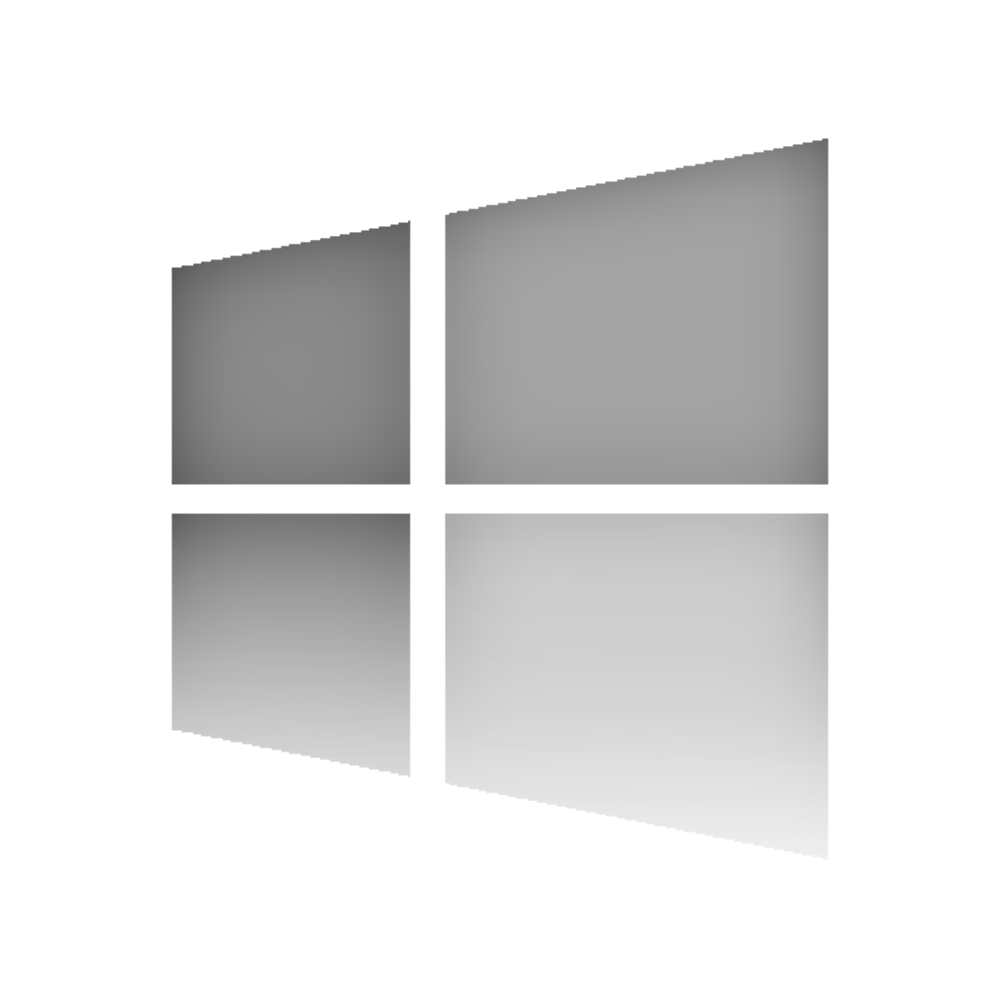

 Projects for
Mac OS
contact us
facebook
Projects for
Mac OS
contact us
facebook
Tramell Software Development provides projects for several architectures. One of these architectures, is the Mac OS Platform. From flying toasters to chrome gradient apples, we have been working with Mac OS for some time. If you are looking to deploy software on the Mac OS Platform, we are here to help make that happen. We have the resources and experience to help you produce your very best on the Macintosh Operating System. For more info, or to discuss a Mac OS project with one of our developers, please visit out Contact Us page.
https://www.apple.com